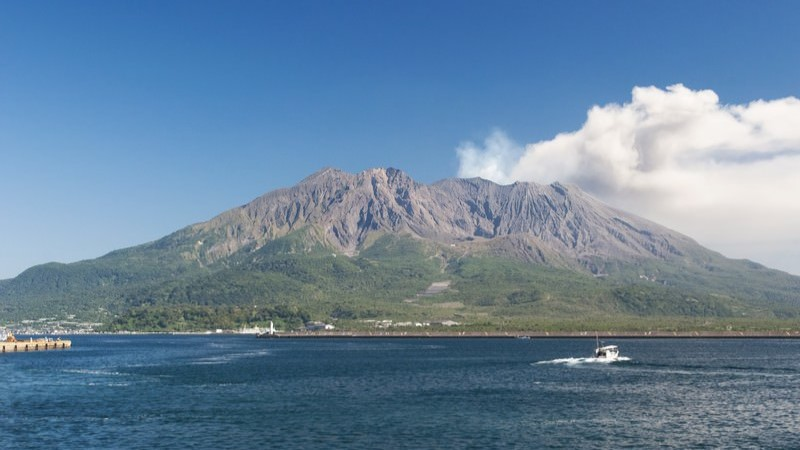
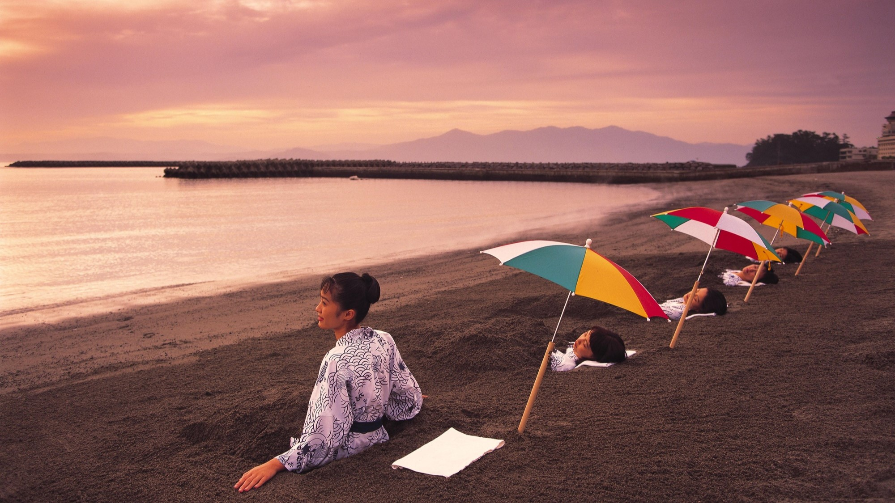
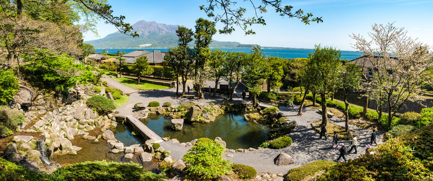

鹿児島の象徴、桜島（さくらじま）は錦江湾に浮かぶ活火山で、日本でも最も活動が活発な火山の一つです。1914年の大正噴火によって大隅半島とつながり、今では半島のような地形となっています。
標高約1,117メートルの山頂からは、今も噴煙が立ち上り、鹿児島市内の至る所からその姿を望むことができます。市民にとっては、親しみと畏れの両方を感じさせる存在です。
「溶岩なぎさ遊歩道」では溶岩原を歩くことができ、「桜島ビジターセンター」では噴火の歴史を学べます。足湯が楽しめる温泉施設もあり、自然と触れ合いながら火山の営みを体感できます。
また、桜島大根や桜島小みかんなどの特産品も有名で、地域の暮らしと深く結びついています。自然と人々の知恵が共存する“生きている火山”の風景を、ぜひ感じてみてください。
写真協力：ぱくたそ

薩摩半島の南端に位置する指宿温泉は、日本を代表する温泉地の一つで、特に「砂むし温泉」で知られています。
海岸沿いの砂浜に高温の温泉が自然に湧き出し、その熱を利用して人が砂に全身を埋める「砂むし体験」は、全国でも珍しく、
国内外の観光客に人気です。砂に包まれることで血行が促進され、デトックスや美容効果も期待されるとされ、
多くの人々が癒しを求めて訪れます。指宿温泉には多くの宿泊施設や日帰り入浴施設があり、豊富な湯量と泉質の良さも魅力です。
周辺には開聞岳や長崎鼻、池田湖など自然に囲まれた観光地も点在し、温泉と観光を同時に楽しむことができます。
歴史的には江戸時代から湯治場として栄え、多くの文人墨客にも愛された地でもあります。
温泉の恵みと南国の温暖な気候に包まれた指宿温泉は、まさに心と体を癒す特別な場所です。
写真協力：公益社団法人 鹿児島県観光連盟

仙巌園は鹿児島市にある歴史的庭園で、薩摩藩主・島津家の別邸として1658年に築かれました。錦江湾と桜島を背景にした雄大な借景が特徴で、
日本庭園の美しさと雄大な自然が調和した景勝地として多くの人々を魅了しています。園内には四季折々の花々が咲き、趣ある石灯籠や水路、
茶室などが点在し、江戸時代の文化や武家の美意識を感じることができます。また、仙巌園には明治維新の原動力となった集成館事業の遺構も残されており、
近代化に向けた島津家の先進的な取り組みを今に伝えています。園内に併設された尚古集成館では、島津家ゆかりの品々や薩摩の歴史に関する資料も展示されており、
観光と学びを同時に楽しむことができます。鹿児島を訪れるなら外せない名所のひとつであり、美しい景観と深い歴史に触れることができる貴重な場所です。
写真協力：公益社団法人 鹿児島県観光連盟